คู่มือส่งมอบ · ฉบับตรวจหลักฐานSWING RIGHTS
เล่ม 2
หลังบ้านและงานเจ้าหน้าที่
ผู้รับมอบ: อ๋อ
วันที่ข้อมูลและถ่ายภาพ: 20 ตุลาคม 2569 (20 ตุลาคม 2026)
ภาพหน้าจอในคู่มือนี้ใช้ข้อมูลจำลอง ณ วันที่ 20 ตุลาคม 2569 (20 ตุลาคม 2026)
ภายในองค์กร ห้ามเผยแพร่สาธารณะ
 หน้า: queue · 1280px · ถ่าย 20 ตุลาคม 2569 (20 ตุลาคม 2026)
หน้า: queue · 1280px · ถ่าย 20 ตุลาคม 2569 (20 ตุลาคม 2026)
URL: https://swingrights.app/adminขั้นที่ 1: เปิดเว็บจริงเพื่อตรวจหน้าที่ใช้ส่งมอบ
เอกสารจากโค้ด ฐานข้อมูล และเว็บจริง ไม่แก้แอปหรือการตั้งค่า ส่วนที่ยังไม่มีหลักฐานระบุ [ต้องยืนยัน] ไม่ใช้ภาพสร้างแทนหน้าจอ
SWING RIGHTS · สารบัญ
สารบัญ
1. งานประจำวัน, เปิดคิวงาน · หน้า 4
2. คิวงานบนมือถือ · หน้า 5
3. เคสทั้งหมดและตัวกรอง · หน้า 6
4. ภาระงานทีมและภาพรวม · หน้า 7
5. ภาพรวมและสถิติ · หน้า 8
6. รายละเอียดเคส, อ่านเรื่องก่อนดำเนินการ · หน้า 9
7. รับเคสหรือมอบหมาย, ขั้นที่ 1 · หน้า 10
8. นัดติดตามและสถานะ, ขั้นที่ 2 · หน้า 11
9. เปิดข้อมูลส่วนบุคคลอย่างจำเป็น · หน้า 12
10. ฟังเสียงและดูรูปหลักฐาน · หน้า 13
11. ส่งข้อความและถามผู้แจ้งเพิ่ม · หน้า 14
12. เอกสารและพิมพ์รายงาน · หน้า 15
13. ประวัติการแก้ไข · หน้า 16
14. /intake, ก่อนสัมภาษณ์ · หน้า 17
15. ค้นหาหน่วยงานส่งต่อ · หน้า 18
16. ส่งต่อจากเคส, ขั้นที่ 1 · หน้า 19
หน้า: queue · 1280px · ถ่าย 20 ตุลาคม 2569 (20 ตุลาคม 2026)
URL: https://swingrights.app/adminขั้นที่ 1: ใช้เมนูจริงเทียบกับบทที่ต้องการ
ภาพหนึ่งภาพต่อจุดที่ตรวจได้ ภาพผลที่ต้องเปลี่ยนบัญชี ส่งเคส หรือเปิดฟีเจอร์ยัง [ต้องยืนยัน] ไม่มีการจำลองผลลัพธ์
SWING RIGHTS · สารบัญ
สารบัญ (ต่อ)
17. ดูแลรายชื่อหน่วยงาน · หน้า 20
18. SLA 24 ชั่วโมงและการส่งขึ้น · หน้า 21
19. ทบทวนสิทธิ์รายเดือน · หน้า 22
20. รายงานโครงการและ CSV · หน้า 23
21. หน้าระบบทุกแท็บ · หน้า 24
22. ผู้แจ้งที่ลงทะเบียน · หน้า 25
23. ผู้เข้าชมเว็บไซต์ · หน้า 26
24. บันทึกกิจกรรม · หน้า 27
25. AI และเครดิต · หน้า 28
26. หยุดแนวทาง AI, ไม่เท่ากับหยุด AI ทั้งหมด · หน้า 29
27. โฮสต์ โดเมน เผยแพร่ และย้อนเวอร์ชัน · หน้า 30
28. ปัญหาเสียงบน iPhone หรือส่งไม่สำเร็จ · หน้า 31
29. ล็อกอิน แจ้งเตือน หรือเครดิตมีปัญหา · หน้า 32
30. Checklist สัปดาห์แรกของอ๋อ · หน้า 33
หน้า: queue · 1280px · ถ่าย 20 ตุลาคม 2569 (20 ตุลาคม 2026)
URL: https://swingrights.app/adminขั้นที่ 1: ใช้เมนูจริงเทียบกับบทที่ต้องการ
ภาพหนึ่งภาพต่อจุดที่ตรวจได้ ภาพผลที่ต้องเปลี่ยนบัญชี ส่งเคส หรือเปิดฟีเจอร์ยัง [ต้องยืนยัน] ไม่มีการจำลองผลลัพธ์
SWING RIGHTS · เล่ม 2
1. งานประจำวัน, เปิดคิวงาน
หน้า: queue · 1280px · ถ่าย 20 ตุลาคม 2569 (20 ตุลาคม 2026)
URL: https://swingrights.app/adminขั้นที่ 1: เลือก “คิวงาน” จะเห็นเคสที่ต้องตอบก่อนอยู่ด้านบน
- เริ่มจากจำนวนเกิน 24 ชั่วโมง รอตอบครั้งแรก ยังไม่มีผู้รับผิดชอบ และสัดส่วนตอบทันเวลา เป้าหมาย 90%
- เลือกพื้นที่และตรวจป้ายเวลาตอบก่อนเปิดเคส ป้าย “ยังไม่ประเมิน” ไม่ใช่ระดับความเสี่ยงต่ำ
- ตามโค้ดหน้าคิว/ภาพรวมดึงซ้ำทุก 60 วินาทีและมีช่องทางอัปเดตสด ไม่ต้องอ้างว่าต้องเปิด /track เพื่ออัปเดตงานเจ้าหน้าที่
หลักฐาน: src/pages/AdminDashboard.tsx; src/hooks/useRealtimeCases.ts; ภาพ queue_1280
SWING RIGHTS · เล่ม 2
2. คิวงานบนมือถือ
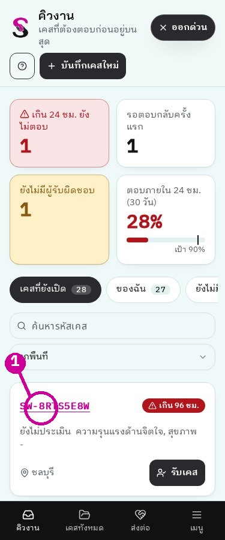
หน้า: queue · 375px · ถ่าย 20 ตุลาคม 2569 (20 ตุลาคม 2026)
URL: https://swingrights.app/adminขั้นที่ 1: เปิดเคสจากรายการบนมือถือ 375px
- เมนูงานอยู่ด้านล่างหรือในแผ่นเมนูจอเล็ก ส่วนคอมพิวเตอร์อยู่ด้านซ้าย
- ตรวจรหัส พื้นที่ และเวลาตอบก่อนรับเคส ไม่กดรับเคสเพียงเพื่อดูว่าปุ่มทำงาน
- คู่มือถ่ายภาพก่อนรับเคส จึงไม่มีการเปลี่ยนผู้รับผิดชอบ
หลักฐาน: src/components/admin/StaffShell.tsx
SWING RIGHTS · เล่ม 2
3. เคสทั้งหมดและตัวกรอง
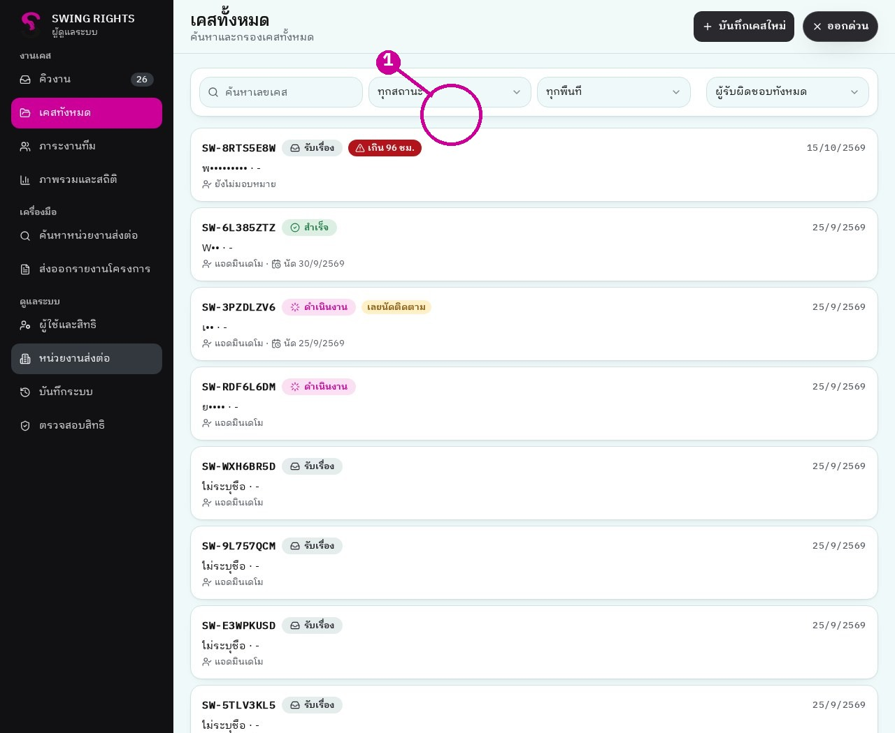
หน้า: cases · 1280px · ถ่าย 20 ตุลาคม 2569 (20 ตุลาคม 2026)
URL: https://swingrights.app/admin/casesขั้นที่ 1: เปิด “เคสทั้งหมด” แล้วเลือกตัวกรองหรือค้นรหัส
- ใช้ตัวกรองสถานะ พื้นที่ ผู้รับผิดชอบ และคำค้นตามที่แสดงจริง
- บทบาท caseworker แก้เคสที่ตนรับผิดชอบตามสิทธิ์ในฐานข้อมูล; manager/admin มีสิทธิ์จัดการมากกว่า; viewer ดูอย่างเดียว
- หากไม่มีสิทธิ์ อย่าพยายามเลี่ยงด้วยลิงก์ตรง ให้ผู้ดูแลตรวจบทบาทและสถานะ
หลักฐาน: src/pages/AdminDashboard.tsx; pg_policies cases วันที่ตรวจ
SWING RIGHTS · เล่ม 2
4. ภาระงานทีมและภาพรวม
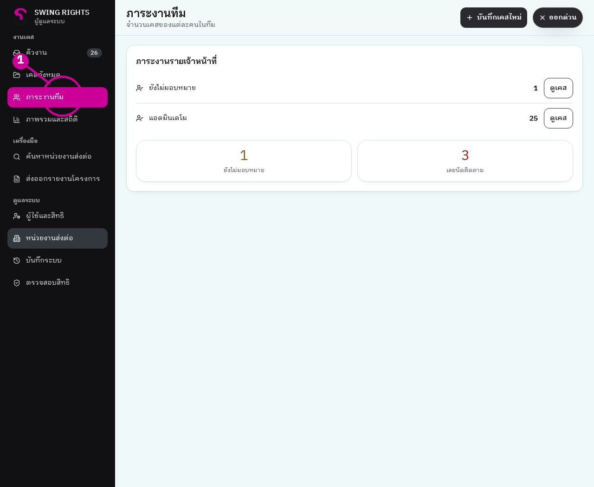
หน้า: caseload · 1280px · ถ่าย 20 ตุลาคม 2569 (20 ตุลาคม 2026)
URL: https://swingrights.app/admin/caseloadขั้นที่ 1: เลือก “ภาระงานทีม” เพื่อตรวจงานที่รับผิดชอบ
- ชื่อเมนูจริงคือ “ภาระงานทีม” อย่าเรียก “เคสของฉัน” หากปุ่มเว็บไม่ได้ใช้คำนี้
- ใช้ตรวจงานค้าง วันนัด และการกระจายภาระก่อนมอบหมาย
- หน้าภาพรวมและสถิติเป็น /admin/overview แยกจากหน้านี้
หลักฐาน: src/components/admin/StaffShell.tsx; src/pages/AdminDashboard.tsx
SWING RIGHTS · เล่ม 2
5. ภาพรวมและสถิติ
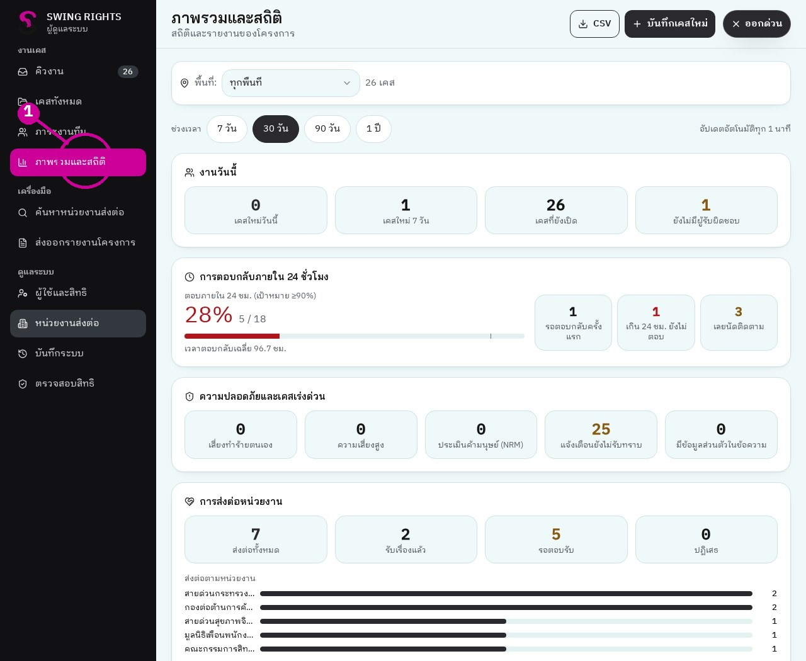
หน้า: overview · 1280px · ถ่าย 20 ตุลาคม 2569 (20 ตุลาคม 2026)
URL: https://swingrights.app/admin/overviewขั้นที่ 1: เลือก “ภาพรวมและสถิติ” จะเห็นตัวชี้วัดของช่วงเวลานั้น
- ตัวเลขสรุปขึ้นกับช่วงเวลา พื้นที่ และเกณฑ์นับ ไม่ควรเทียบกับจำนวนแถวในฐานข้อมูลโดยตรง
- ประเภทการละเมิดจากผู้แจ้งและเจ้าหน้าที่ใช้ร่วมกันในสถิติ ต้องไม่ลบคำตอบเดิมเมื่อเพิ่มแท็ก
- ไม่กดเปลี่ยนข้อมูลเคสเพื่อให้ตัวเลขดูครบ ระบุข้อมูลจำลองทุกครั้งที่ใช้สรุป
หลักฐาน: src/components/admin/DashboardOverview.tsx; ภาพ overview_1280
SWING RIGHTS · เล่ม 2
6. รายละเอียดเคส, อ่านเรื่องก่อนดำเนินการ
 หน้า: รายละเอียดเคส · 1280px · ถ่าย 20 ตุลาคม 2569 (20 ตุลาคม 2026)
หน้า: รายละเอียดเคส · 1280px · ถ่าย 20 ตุลาคม 2569 (20 ตุลาคม 2026)
URL: https://swingrights.app/admin/case/399cce68-782d-4d03-a023-bc72d15d2a52ขั้นที่ 1: เปิดรหัสเคส จะเห็นเรื่องเล่า ผลคัดกรอง และขั้นถัดไป
- ด้านซ้ายเป็นเรื่องและข้อมูล ด้านขวาเป็นผู้รับผิดชอบ นัดติดตาม สถานะ และข้อความถึงผู้แจ้ง
- ภาพนี้เป็นเคสจำลองที่มีอยู่แล้ว ไม่แก้คำตอบหรือสถานะ
- ให้ตรวจความปลอดภัยทันทีหากผู้แจ้งบอกไม่ปลอดภัย อย่าตัดสินจากคะแนนซึมเศร้าอย่างเดียว
หลักฐาน: src/components/admin/CaseDetail.tsx; ภาพ detail_1280
SWING RIGHTS · เล่ม 2
7. รับเคสหรือมอบหมาย, ขั้นที่ 1
หน้า: รายละเอียดเคส · 1280px · ถ่าย 20 ตุลาคม 2569 (20 ตุลาคม 2026)
URL: https://swingrights.app/admin/case/399cce68-782d-4d03-a023-bc72d15d2a52ขั้นที่ 1: เลือกผู้รับผิดชอบ หรือกด “รับเคสนี้เอง”
- ตรวจว่าคนรับเคสมีสิทธิ์และพร้อมติดตามก่อนเลือก ผู้ปฏิบัติงานเคสไม่ควรแก้เคสที่ไม่ได้รับมอบหมาย
- [ต้องยืนยัน] ภาพหลังรับ/มอบหมายและการอ่านกลับว่าเปลี่ยนถูกคน ไม่กดบันทึกในงานคู่มือ
- ทุกการแก้ไขมีระบบบันทึกตามโค้ด แต่ไม่รับรองว่าบันทึกครอบคลุมทุกเส้นทางโดยยังไม่ตรวจครบ
หลักฐาน: src/components/admin/CaseDetail.tsx; pg_policies cases
SWING RIGHTS · เล่ม 2
8. นัดติดตามและสถานะ, ขั้นที่ 2
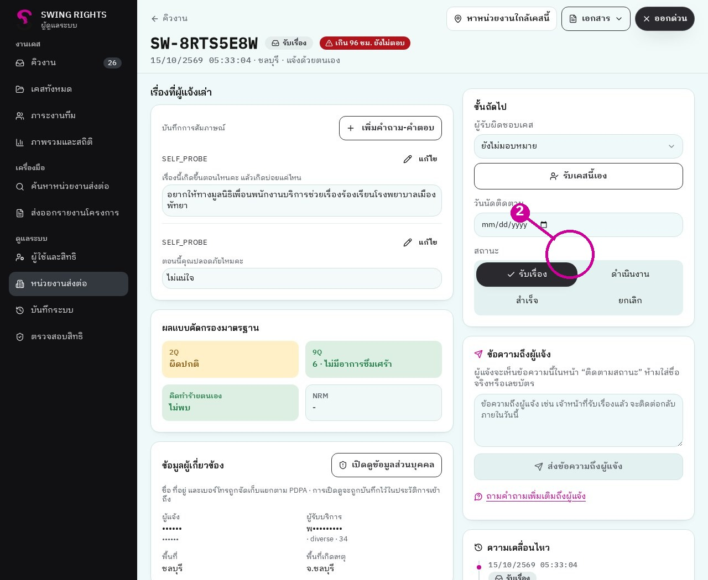
หน้า: รายละเอียดเคส · 1280px · ถ่าย 20 ตุลาคม 2569 (20 ตุลาคม 2026)
URL: https://swingrights.app/admin/case/399cce68-782d-4d03-a023-bc72d15d2a52ขั้นที่ 2: เลือก “วันนัดติดตาม” และสถานะตามผลการทำงานจริง
- สถานะ: รับเรื่อง = Received; ดำเนินงาน = In progress; สำเร็จ = Completed; ยกเลิก = Cancelled
- ความรุนแรง: ต่ำ (ไม่เร่งด่วน) = Low (not urgent); ปานกลาง (ติดตามใกล้ชิด) = Medium (close follow-up); สูง (ฉุกเฉิน) = High (urgent)
- การปิดสถานะมีขั้นยืนยันตามโค้ด [ต้องยืนยัน] ภาพหน้าต่างยืนยันและหลังบันทึก ไม่เปลี่ยนสถานะเพื่อถ่ายภาพ
หลักฐาน: src/i18n/dict/staff.ts; src/i18n/dict/misc.ts; CaseDetail.tsx
SWING RIGHTS · เล่ม 2
9. เปิดข้อมูลส่วนบุคคลอย่างจำเป็น
 หน้า: เปิดดูข้อมูลส่วนบุคคล · 1280px · ถ่าย 20 ตุลาคม 2569 (20 ตุลาคม 2026)
หน้า: เปิดดูข้อมูลส่วนบุคคล · 1280px · ถ่าย 20 ตุลาคม 2569 (20 ตุลาคม 2026)
URL: https://swingrights.app/admin/case/399cce68-782d-4d03-a023-bc72d15d2a52ขั้นที่ 1: กด “เปิดดูข้อมูลส่วนบุคคล” เฉพาะเมื่อจำเป็นต่อการช่วยเหลือ
- ระบบอ่านข้อมูลแยกเก็บผ่านคำสั่งที่ตรวจสิทธิ์ และเรียกบันทึกการเปิดดูพร้อมผู้เปิด
- คู่มือนี้ถ่ายเฉพาะก่อนเปิด เพราะการเปิดเพิ่มบันทึกใหม่ และผู้ใช้ห้ามเปลี่ยนข้อมูล
- [ต้องยืนยัน] ภาพข้อมูลหลังเปิดและบันทึกครั้งนั้นในรอบทดสอบที่อนุญาต ห้ามถ่ายภาพเคสจริงไว้ในเครื่องส่วนตัว
หลักฐาน: get_case_pii, migration 20260805170545:35-49; CaseDetail.tsx
SWING RIGHTS · เล่ม 2
10. ฟังเสียงและดูรูปหลักฐาน
หน้า: รายละเอียดเคส · 1280px · ถ่าย 20 ตุลาคม 2569 (20 ตุลาคม 2026)
URL: https://swingrights.app/admin/case/399cce68-782d-4d03-a023-bc72d15d2a52ขั้นที่ 1: ตรวจส่วนหลักฐานของเคส แล้วเปิดเฉพาะไฟล์ที่จำเป็น
- ลิงก์ไฟล์เป็นลิงก์ชั่วคราว: เสียงที่ลงนามทีละไฟล์ 5 นาที; ชุดไฟล์ในรายละเอียด 10 นาทีตามโค้ด; ฝั่ง /track 5 นาที
- เคสที่ถ่ายไม่มีหลักฐานเสียง/รูปให้แสดงครบ [ต้องยืนยัน] ภาพเล่นเสียง เปิดภาพ และลิงก์หมดอายุ
- ห้ามสร้างเสียงหรือรูปจำลองแทนหลักฐานเว็บจริง ห้ามดาวน์โหลดเก็บโดยไม่มีความจำเป็น
หลักฐาน: CaseDetail.tsx:231,247; track-case/index.ts:51-54
SWING RIGHTS · เล่ม 2
11. ส่งข้อความและถามผู้แจ้งเพิ่ม
หน้า: รายละเอียดเคส · 1280px · ถ่าย 20 ตุลาคม 2569 (20 ตุลาคม 2026)
URL: https://swingrights.app/admin/case/399cce68-782d-4d03-a023-bc72d15d2a52ขั้นที่ 1: พิมพ์ใน “ข้อความถึงผู้แจ้ง” หรือเลือกถามคำถามเพิ่มเติม
- ผู้แจ้งอ่านจากหน้าติดตามสถานะ ไม่ใช่แชตส่วนตัวของเจ้าหน้าที่
- เขียนสั้น ชัด ไม่ขอเลขเอกสารหรือข้อมูลเกินจำเป็น แล้วตรวจผู้รับก่อนส่ง
- [ต้องยืนยัน] ภาพส่งคำถาม หน้า /track ที่ได้รับ และการตอบกลับ ไม่มีการสร้างคำถามใหม่ในงานนี้
หลักฐาน: src/components/admin/CaseDetail.tsx; src/pages/Track.tsx
SWING RIGHTS · เล่ม 2
12. เอกสารและพิมพ์รายงาน
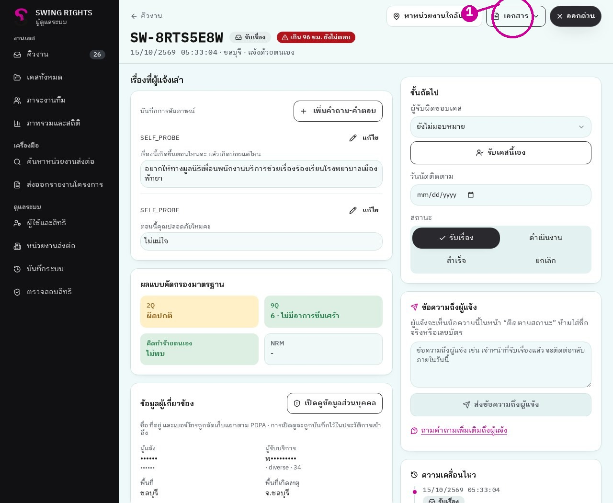
หน้า: เอกสาร · 1280px · ถ่าย 20 ตุลาคม 2569 (20 ตุลาคม 2026)
URL: https://swingrights.app/admin/case/399cce68-782d-4d03-a023-bc72d15d2a52ขั้นที่ 1: กด “เอกสาร” เพื่อดูรายการเอกสารที่หน้าจอรองรับ
- AI คือระบบช่วยร่างข้อความ ไม่ใช่ผู้วินิจฉัยหรือที่ปรึกษากฎหมาย เจ้าหน้าที่ต้องตรวจข้อเท็จจริงและเนื้อหาก่อนใช้
- ไม่กดร่างเอกสาร เพราะอาจบันทึกแบบร่างและใช้เครดิต; การพิมพ์/ส่งออกอาจเพิ่มบันทึกการส่งออก
- [ต้องยืนยัน] ภาพรายการเอกสาร ร่างที่ได้ หน้าตรวจแก้ และหน้าพิมพ์จากเคสทดสอบที่ได้รับอนุญาต
หลักฐาน: src/components/admin/DocumentDraftDialog.tsx; draft-case-document/index.ts
SWING RIGHTS · เล่ม 2
13. ประวัติการแก้ไข
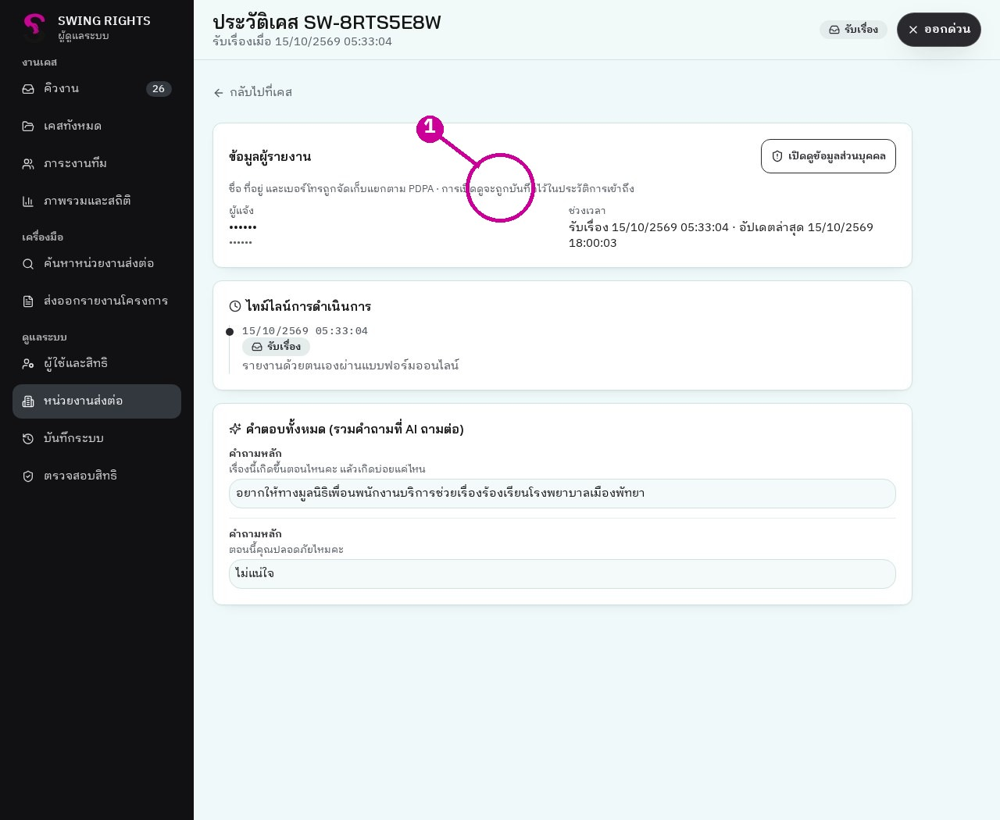
หน้า: ประวัติการแก้ไข · 1280px · ถ่าย 20 ตุลาคม 2569 (20 ตุลาคม 2026)
URL: https://swingrights.app/admin/case/399cce68-782d-4d03-a023-bc72d15d2a52/historyขั้นที่ 1: กด “ดูประวัติทั้งหมด” จะเห็นการเปลี่ยนแปลงของเคส
- ตรวจวันเวลา ผู้ทำรายการ และชื่อส่วนที่เปลี่ยน ไม่ใช้การคาดเดาว่าใครเปิดข้อมูล
- แยกประวัติเปลี่ยนเคสจากบันทึกเปิดข้อมูลและการส่งออก
- หากไม่พบกิจกรรม ให้ตรวจช่วงเวลาและเส้นทางบันทึก ไม่ถือว่าไม่มีการเข้าถึงข้อมูลเลย
หลักฐาน: src/pages/CaseHistory.tsx; case_audit; case_answer_revisions
SWING RIGHTS · เล่ม 2
14. /intake, ก่อนสัมภาษณ์
 หน้า: intake · 375px · ถ่าย 20 ตุลาคม 2569 (20 ตุลาคม 2026)
หน้า: intake · 375px · ถ่าย 20 ตุลาคม 2569 (20 ตุลาคม 2026)
URL: https://swingrights.app/intakeขั้นที่ 1: อ่านความยินยอมและให้ผู้รับบริการเลือกก่อนเริ่ม
- แบบบันทึกสำหรับเจ้าหน้าที่มีความยินยอมอัด/วิเคราะห์เสียง การถอนความยินยอม และตัวเลือกส่งเฉพาะเสียงไป AI ภายนอก
- หากไม่ยินยอมการถอดเสียงภายนอก ให้พิมพ์หรือจดแทนตามข้อความจริง ห้ามกดยินยอมแทนผู้รับบริการ
- [ต้องยืนยัน] ภาพทุกขั้นอัดเสียง คัดกรอง ส่งต่อ ลายเซ็น และส่งสำเร็จ /intake ไม่ถูกห่อด้วยตัวล็อกที่ route ตามซอร์ส
หลักฐาน: src/App.tsx:55; src/pages/Intake.tsx
SWING RIGHTS · เล่ม 2
15. ค้นหาหน่วยงานส่งต่อ
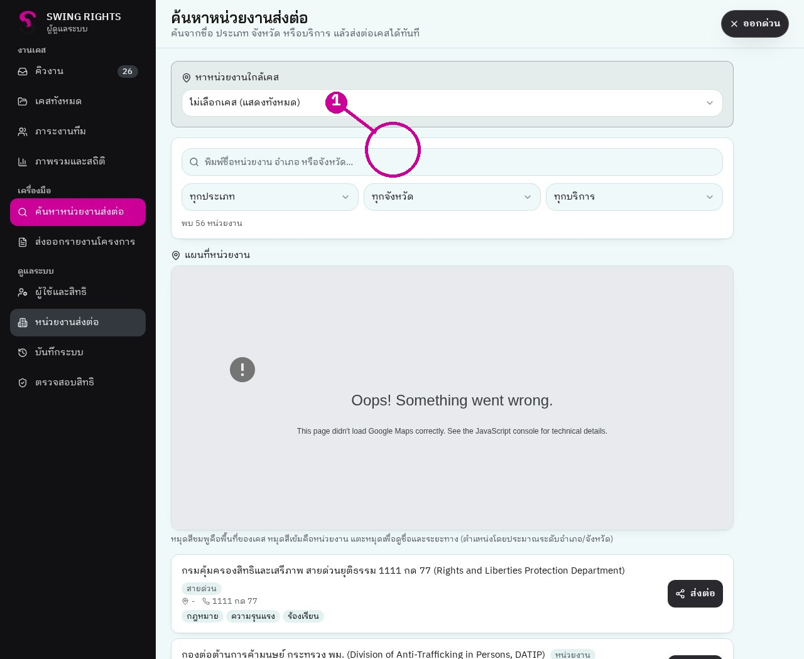
หน้า: partner_search · 1280px · ถ่าย 20 ตุลาคม 2569 (20 ตุลาคม 2026)
URL: https://swingrights.app/admin/partner-searchขั้นที่ 1: เปิด “ค้นหาหน่วยงานส่งต่อ” แล้วค้นพื้นที่หรือบริการ
- ตรวจโทรศัพท์ บริการ เวลา และความพร้อมกับหน่วยงานก่อนส่งข้อมูล
- ภาพจริงพบแผนที่ Google แจ้งข้อผิดพลาด แต่รายชื่อยังแสดง จึงไม่ยืนยันว่าแผนที่พร้อมใช้ การมีรายชื่อไม่ยืนยันว่าหน่วยงานรับเคสหรือเปิดในขณะนั้น
- [ต้องยืนยัน] ข้อจำกัดโดเมนและบริการ Google Maps แม้พบชื่อค่าลับแล้ว
หลักฐาน: src/pages/PartnerSearch.tsx; src/components/PartnerMap.tsx
SWING RIGHTS · เล่ม 2
16. ส่งต่อจากเคส, ขั้นที่ 1
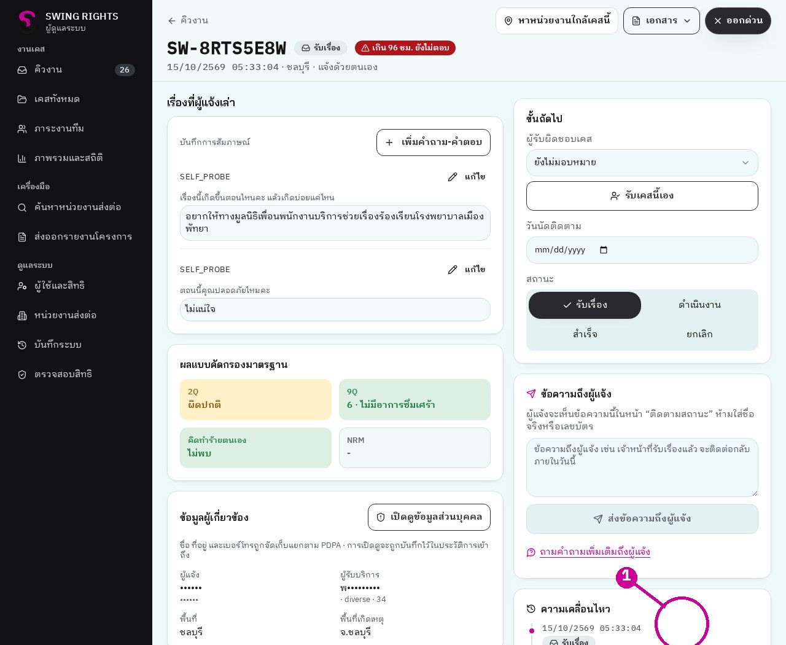
หน้า: ส่งต่อหน่วยงาน · 1280px · ถ่าย 20 ตุลาคม 2569 (20 ตุลาคม 2026)
URL: https://swingrights.app/admin/case/399cce68-782d-4d03-a023-bc72d15d2a52ขั้นที่ 1: กด “ส่งต่อหน่วยงาน” เพื่อเริ่มเลือกรายการส่งต่อ
- ตรวจความจำเป็นและขอบเขตข้อมูลก่อนส่ง ให้ใช้ข้อมูลสรุปเท่าที่จำเป็น
- ลิงก์ /referral/:token ให้หน่วยงานรับหรือปฏิเสธโดยไม่ต้องมีบัญชี เป็นลิงก์เฉพาะรายการ ไม่แชร์สาธารณะ
- [ต้องยืนยัน] ภาพสร้างส่งต่อ ลิงก์ที่ออกจริง หน้าหน่วยงานรับ และผลตอบกลับ ไม่สร้าง token ใหม่ในงานนี้
หลักฐาน: create_case_referral; src/pages/ReferralRespond.tsx; referral-respond/index.ts
SWING RIGHTS · เล่ม 2
17. ดูแลรายชื่อหน่วยงาน
 หน้า: partners · 1280px · ถ่าย 20 ตุลาคม 2569 (20 ตุลาคม 2026)
หน้า: partners · 1280px · ถ่าย 20 ตุลาคม 2569 (20 ตุลาคม 2026)
URL: https://swingrights.app/admin/partnersขั้นที่ 1: ผู้ดูแลระบบเปิด “หน่วยงานส่งต่อ” จะเห็นรายการจัดการ
- ตรวจชื่อ ประเภท พื้นที่ บริการ เบอร์ อีเมล และสถานะก่อนแก้
- รายการ active อ่านโดยผู้ไม่เข้าสู่ระบบได้ตามนโยบายที่ตรวจ ต้องไม่ใส่บันทึกภายในหรือข้อมูลบุคคลที่ไม่ควรเผยแพร่
- [ต้องยืนยัน] ความยินยอมเผยแพร่ผู้ติดต่อและการตรวจคอลัมน์ notes ไม่เปลี่ยนรายการในงานนี้
หลักฐาน: src/pages/AdminPartners.tsx; pg_policies referral_partners
SWING RIGHTS · เล่ม 2
18. SLA 24 ชั่วโมงและการส่งขึ้น
หน้า: queue · 1280px · ถ่าย 20 ตุลาคม 2569 (20 ตุลาคม 2026)
URL: https://swingrights.app/adminขั้นที่ 1: อ่านตัวเลข “เกิน 24 ชม. ยังไม่ตอบ” ก่อนเริ่มงานอื่น
- SLA คือเป้าหมายเวลาตอบครั้งแรก 24 ชั่วโมง ไม่ใช่กำหนดปิดเคสทุกกรณี เป้าหมายอัตราตอบทันเวลา 90%
- ฐานข้อมูลยืนยันงาน sla-warning-hourly เปิดอยู่ ตั้งทุกชั่วโมงนาที 0; โค้ดตรวจเคสค้างและระดับส่งขึ้น
- ตารางเวลาที่เปิดอยู่ไม่พิสูจน์ว่างานล่าสุดสำเร็จ หรือแจ้งเตือนภายนอกถึงผู้รับแล้ว [ต้องยืนยัน] ประวัติการรันและผู้รับแจ้ง
หลักฐาน: cron.job 20/10/2026; notify-case/index.ts:90-135
SWING RIGHTS · เล่ม 2
19. ทบทวนสิทธิ์รายเดือน
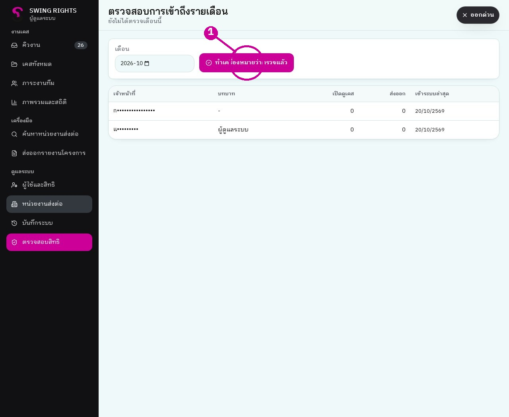
หน้า: access_review · 1280px · ถ่าย 20 ตุลาคม 2569 (20 ตุลาคม 2026)
URL: https://swingrights.app/admin/access-reviewขั้นที่ 1: เลือกเดือนแล้วตรวจบทบาท เปิดดู และส่งออก ก่อนทำเครื่องหมาย
- admin/manager เข้าหน้านี้ได้ ตรวจว่าบุคลากรยังทำงานและเข้าถึงเท่าที่จำเป็น
- ข้อความ “ยังไม่ได้ตรวจเดือนนี้” และปุ่ม “ทำเครื่องหมายว่าตรวจแล้ว” เห็นจริง ไม่กดเพื่อถ่ายภาพ
- [ต้องยืนยัน] ผู้รับผิดชอบรอบเดือนและหลักฐานหลังตรวจเสร็จ
หลักฐาน: src/pages/AccessReview.tsx; src/App.tsx:84
SWING RIGHTS · เล่ม 2
20. รายงานโครงการและ CSV
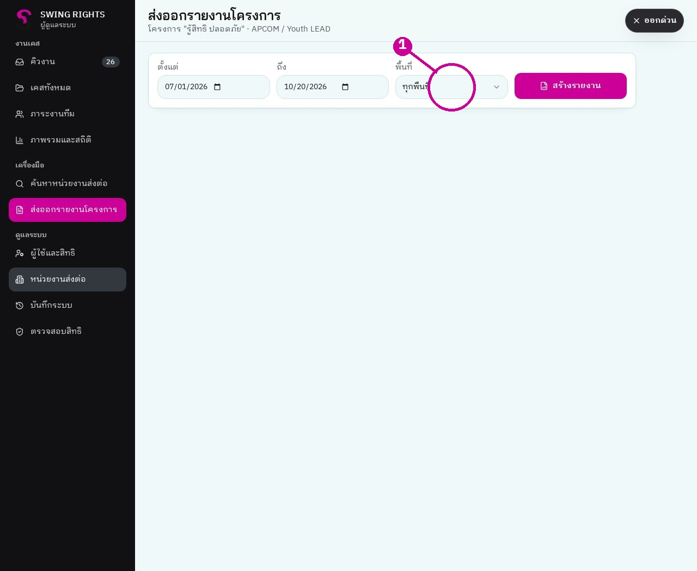
หน้า: project_report · 1280px · ถ่าย 20 ตุลาคม 2569 (20 ตุลาคม 2026)
URL: https://swingrights.app/admin/reportขั้นที่ 1: เลือกตั้งแต่ ถึง พื้นที่ แล้วกด “สร้างรายงาน” เมื่อได้รับอนุญาต
- admin/manager ใช้รายงานโครงการได้; CSV คือไฟล์ตารางที่เปิดด้วยโปรแกรมตารางคำนวณ
- บันทึกกิจกรรมมีปุ่มดาวน์โหลด CSV แยกจากรายงานโครงการ การดาวน์โหลดอาจเพิ่มบันทึกการส่งออก จึงไม่ได้กด
- [ต้องยืนยัน] ภาพรายงานหลังสร้าง ตัวเลือก CSV และไฟล์ที่ได้ ไม่ถือว่ามีเพียงเพราะปุ่มอยู่ในโค้ด
หลักฐาน: src/pages/ProjectReport.tsx; AdminSystem.tsx:43-50
SWING RIGHTS · เล่ม 2
21. หน้าระบบทุกแท็บ
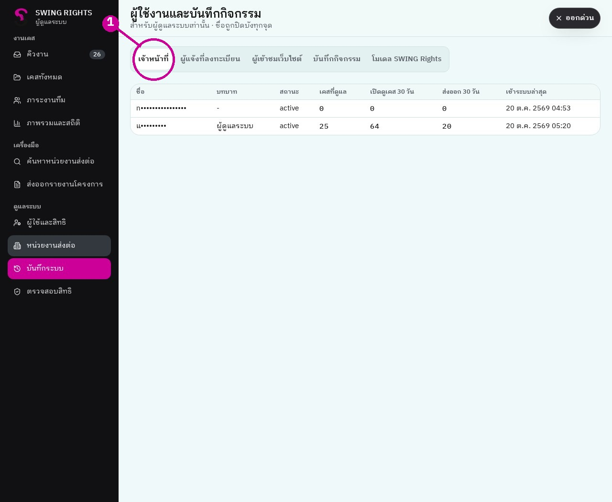
หน้า: system · 1280px · ถ่าย 20 ตุลาคม 2569 (20 ตุลาคม 2026)
URL: https://swingrights.app/admin/systemขั้นที่ 1: เปิด “บันทึกระบบ” จะเห็นแท็บเจ้าหน้าที่และแท็บอื่น
- แท็บจริง: เจ้าหน้าที่ ผู้แจ้งที่ลงทะเบียน ผู้เข้าชมเว็บไซต์ บันทึกกิจกรรม โมเดล SWING Rights
- แท็บเกี่ยวกับผู้แจ้งและผู้เข้าชมแสดงสถิติบัญชีและจำนวนเข้าเว็บ ไม่ใช่ข้อมูลรายเคสทั้งหมด
- หน้าเฉพาะ admin ตรวจสิทธิ์ก่อนให้ผู้อื่นดู
หลักฐาน: src/pages/AdminSystem.tsx:60-139
SWING RIGHTS · เล่ม 2
22. ผู้แจ้งที่ลงทะเบียน
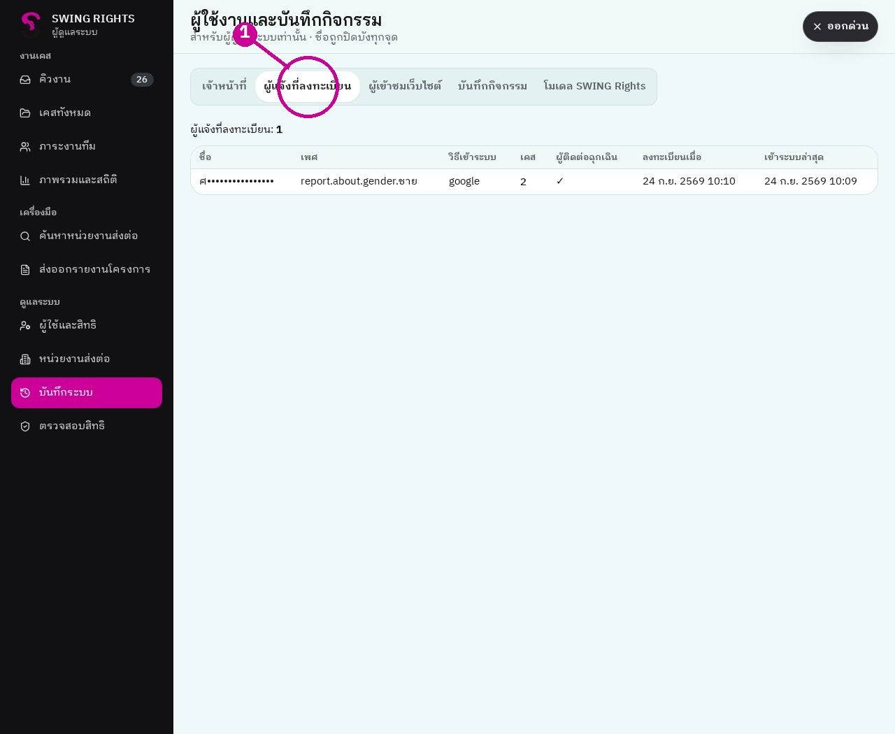
หน้า: ผู้แจ้งที่ลงทะเบียน · 1280px · ถ่าย 20 ตุลาคม 2569 (20 ตุลาคม 2026)
URL: https://swingrights.app/admin/systemขั้นที่ 1: เลือกแท็บ “ผู้แจ้งที่ลงทะเบียน” จะเห็นข้อมูลบัญชีที่อนุญาต
- ใช้ตรวจภาพรวมการสมัครและการเชื่อมเคส ไม่ส่งต่อรายชื่อออกนอกองค์กร
- ชื่อบางจุดถูกปิดบัง แต่ข้อมูลประกอบยังอาจระบุตัวบุคคลได้ ต้องจำกัดผู้ดู
- ไม่นำข้อมูลบัญชีไปตีความว่าเป็นรายชื่อผู้รับบริการทั้งหมด
หลักฐาน: src/pages/AdminSystem.tsx:78-86
SWING RIGHTS · เล่ม 2
23. ผู้เข้าชมเว็บไซต์
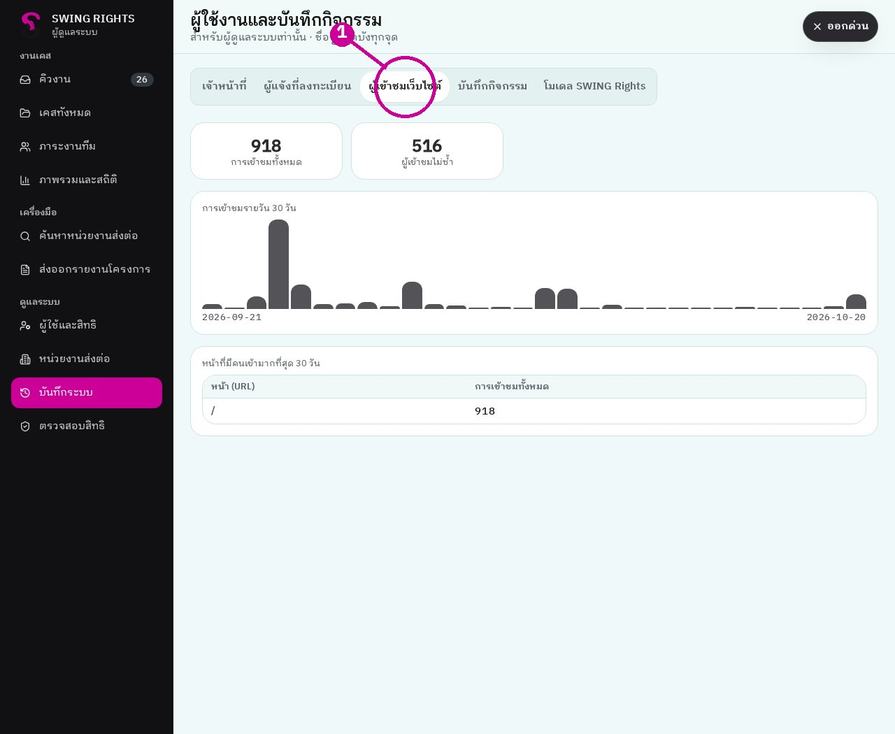
หน้า: ผู้เข้าชมเว็บไซต์ · 1280px · ถ่าย 20 ตุลาคม 2569 (20 ตุลาคม 2026)
URL: https://swingrights.app/admin/systemขั้นที่ 1: เลือก “ผู้เข้าชมเว็บไซต์” จะเห็นสถิติการเข้าเว็บ
- แยกจำนวนครั้งเข้าเว็บกับจำนวนผู้เข้าชม ไม่ใช่จำนวนเคส
- การเปิดเว็บอาจทำให้ระบบบันทึกการเยี่ยมชมตามการทำงานเดิม งานนี้ไม่เปลี่ยนโค้ดเพื่อปิดบันทึก
- ไม่ใช้ตัวเลขสถิติเป็นข้อมูลส่วนบุคคลรายเคส
หลักฐาน: src/pages/AdminSystem.tsx:89-113; record_site_visit
SWING RIGHTS · เล่ม 2
24. บันทึกกิจกรรม
 หน้า: บันทึกกิจกรรม · 1280px · ถ่าย 20 ตุลาคม 2569 (20 ตุลาคม 2026)
หน้า: บันทึกกิจกรรม · 1280px · ถ่าย 20 ตุลาคม 2569 (20 ตุลาคม 2026)
URL: https://swingrights.app/admin/systemขั้นที่ 1: เลือกชนิดกิจกรรม จะเห็นเวลา การกระทำ และรหัสเคส
- มีตัวกรองทั้งหมด เปิดดูเคส ส่งออก/พิมพ์ แก้ไขเคส การใช้ AI แสดงล่าสุดไม่เกิน 300 รายการตามโค้ด
- บันทึกเก่าบางรายการอาจยังอยู่แม้เคสถูกลบจริงจากรอบทดสอบก่อน ไม่ถือว่าเป็นเคสที่ยังเปิด
- หากต้องใช้สอบสวนเหตุ ให้รักษาบันทึกต้นฉบับและสิทธิ์เข้าถึง ไม่ลบเพื่อทำให้รายงานดูสะอาด
หลักฐาน: AdminSystem.tsx:34-39,117-135
SWING RIGHTS · เล่ม 2
25. AI และเครดิต
 หน้า: โมเดล SWING Rights · 1280px · ถ่าย 20 ตุลาคม 2569 (20 ตุลาคม 2026)
หน้า: โมเดล SWING Rights · 1280px · ถ่าย 20 ตุลาคม 2569 (20 ตุลาคม 2026)
URL: https://swingrights.app/admin/systemขั้นที่ 1: ตรวจ “ใช้งานอยู่: เวอร์ชัน 5” ก่อนสั่งฝึกหรือเปิดเวอร์ชันอื่น
- โมเดลตามซอร์ส: followup-question และ draft-case-document ใช้ openai/gpt-6-astra; analyze-case ใช้ google/gemini-2.5-flash; speak-text ใช้ google/gemini-3.1-flash-tts-preview; [ต้องยืนยัน] โมเดลถอดเสียงที่ให้บริการจริงจากประวัติคำขอ
- SWING Rights model เป็นเวอร์ชันแนวทาง/ตัวอย่าง ไม่ใช่หลักฐานว่าฝึกโมเดลพื้นฐานใหม่หรือประมวลผลอยู่เฉพาะในองค์กร ทุกฟังก์ชันต้องตรวจการส่งข้อมูลภายนอก
- ตรวจเครดิต workspace เหลือ 615.14 ณ เวลาสอบถาม เป็นยอดเปลี่ยนแปลงได้ ไม่ใช่เครดิต AI ที่กันไว้ให้โปรเจกต์นี้โดยเฉพาะ [ต้องยืนยัน] หน้าจอเครดิตใน Lovable
หลักฐาน: supabase/functions/*/index.ts; credits read 20/10/2026
SWING RIGHTS · เล่ม 2
26. หยุดแนวทาง AI, ไม่เท่ากับหยุด AI ทั้งหมด
หน้า: โมเดล SWING Rights · 1280px · ถ่าย 20 ตุลาคม 2569 (20 ตุลาคม 2026)
URL: https://swingrights.app/admin/systemขั้นที่ 1: ปุ่ม “ปิดการใช้งาน” อยู่ในแท็บโมเดล แต่ยังไม่กด
- ปุ่มนี้ปิดเวอร์ชันแนวทาง ไม่รับรองว่าหยุดถอดเสียง วิเคราะห์ หรือคำถาม AI
- cron swing-model-auto-update เปิดอยู่ทุกชั่วโมงนาที 15 และโค้ดอาจเปิดเวอร์ชันใหม่เอง จึงต้องจัดการงานตามเวลาด้วยหากต้องการหยุดถาวร
- [ต้องยืนยัน] ขั้นตอนหยุด AI ทั้งระบบโดยผู้มีสิทธิ์และภาพจาก Lovable ห้ามใช้การปิดโมเดลเป็นคำแนะนำหยุดครบทุกฟังก์ชัน
หลักฐาน: cron.job; train-swing-model/index.ts:140-141; SwingModelPanel.tsx
SWING RIGHTS · เล่ม 2
27. โฮสต์ โดเมน เผยแพร่ และย้อนเวอร์ชัน
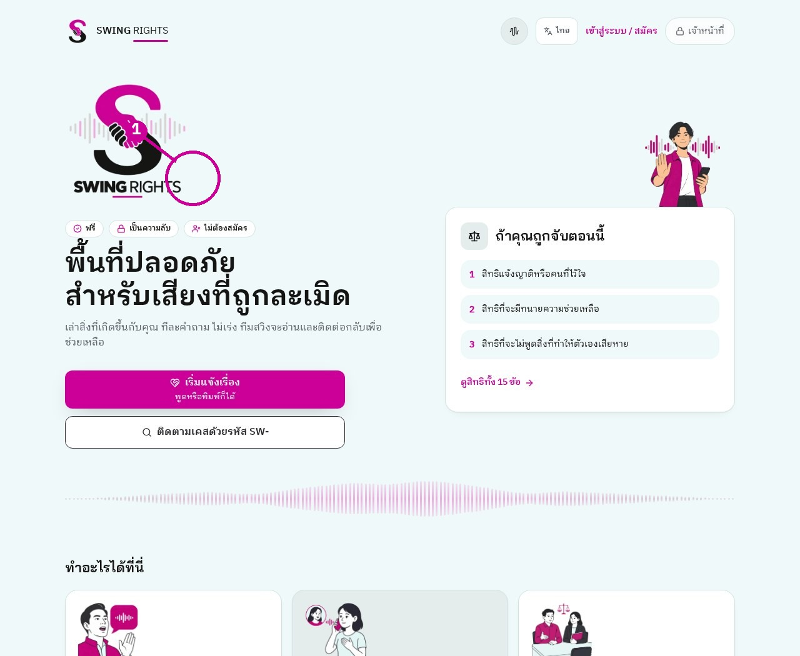
หน้า: home · 1280px · ถ่าย 20 ตุลาคม 2569 (20 ตุลาคม 2026)
URL: https://swingrights.app/ขั้นที่ 1: เปิด swingrights.app เพื่อดูเวอร์ชันที่เผยแพร่จริงก่อนตรวจเปลี่ยนแปลง
- เว็บจริงและโค้ดที่ตรวจอาจต่างเวอร์ชัน ตัวอย่าง TOTP มีในซอร์สแต่ไม่พบในเว็บที่ถ่าย
- แนวทาง Lovable: ปุ่ม Publish ใช้เผยแพร่; History ใช้ประวัติ; Settings → Domains ใช้โดเมน [ต้องยืนยัน] ภาพปุ่มจากบัญชีที่มีสิทธิ์ทุกขั้น
- เข้าหน้าโปรเจกต์ Lovable จากเครื่องมือแล้วพบว่าต้องเข้าสู่บัญชี จึงไม่มีภาพหน้าจัดการ ห้ามใช้ภาพเว็บนี้แทนภาพ Publish หรือ History การย้อนโค้ดไม่รับรองย้อนข้อมูลตาม
หลักฐาน: หลักฐานหน้า Lovable ปฏิเสธการเข้าถึง; คู่มือแพลตฟอร์ม; ภาพเว็บจริง
SWING RIGHTS · เล่ม 2
28. ปัญหาเสียงบน iPhone หรือส่งไม่สำเร็จ
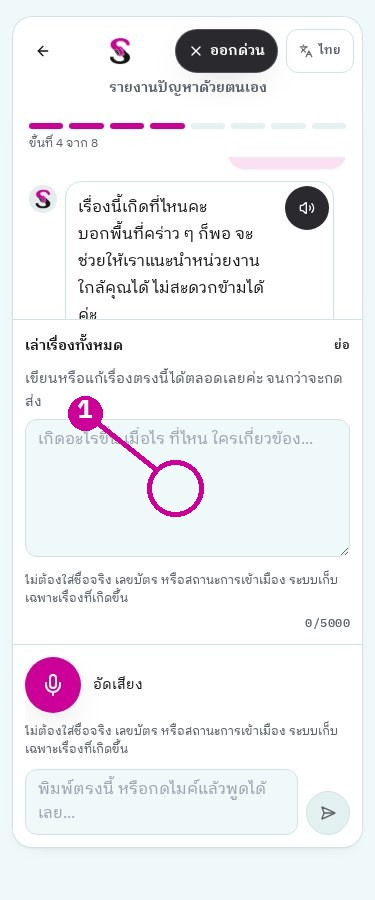
หน้า: report_composer_live · 375px · ถ่าย 20 ตุลาคม 2569 (20 ตุลาคม 2026)
URL: https://swingrights.app/reportขั้นที่ 1: หากเสียงใช้ไม่ได้ ให้เลือกพิมพ์แทนก่อน
- อาการเสียงไม่ได้: อาจไม่อนุญาตไมค์ เปิดจากเบราว์เซอร์ในแอป หรือรูปแบบเสียงไม่รองรับ ไม่ถือว่าสาเหตุยืนยันจากอาการอย่างเดียว
- ขั้นต่อไปให้เปิด Safari โดยตรง ตรวจสิทธิ์ไมโครโฟนในอุปกรณ์ และลองใหม่ [ต้องยืนยัน] ภาพหน้าตั้งค่า iPhone ที่ใช้จริง
- ส่งไม่สำเร็จ: เปิด /recover ในเครื่องเดิม ตรวจรายการ แล้วส่งใหม่เมื่อได้รับอนุญาต ไม่ล้างข้อมูลเครื่องก่อนตรวจ
หลักฐาน: src/components/VoiceRecorder.tsx; src/pages/Recover.tsx
SWING RIGHTS · เล่ม 2
29. ล็อกอิน แจ้งเตือน หรือเครดิตมีปัญหา
 หน้า: users · 1280px · ถ่าย 20 ตุลาคม 2569 (20 ตุลาคม 2026)
หน้า: users · 1280px · ถ่าย 20 ตุลาคม 2569 (20 ตุลาคม 2026)
URL: https://swingrights.app/admin/usersขั้นที่ 1: หากเจ้าหน้าที่เข้าไม่ได้ ให้ admin ตรวจบทบาทและสถานะก่อน
- ล็อกอินไม่ได้: แยกอีเมล/รหัสผิด รออนุมัติ ไม่มีบทบาท ระงับ และ TOTP ไม่ตรง ตรวจอาการจริงก่อนแก้
- LINE/อีเมลไม่ออก: รายชื่อค่าลับที่ตรวจยังไม่มีตัวแปรแจ้งเตือน ให้ผู้รับผิดชอบตรวจการตั้งค่าและประวัติส่ง [ต้องยืนยัน] หน้าจอ Lovable ที่ต้องใช้
- AI ไม่ตอบ: เก็บเวลาและข้อความผิดพลาดโดยไม่ใส่เรื่องเล่าส่วนบุคคล ตรวจเครดิตและสถานะบริการ ไม่ใช้การเติมเครดิตเป็นคำตอบของทุกข้อผิดพลาด
หลักฐาน: admin-users/index.ts; notify-case/index.ts:45-68; เครดิตที่อ่าน
SWING RIGHTS · เล่ม 2
30. Checklist สัปดาห์แรกของอ๋อ
หน้า: queue · 1280px · ถ่าย 20 ตุลาคม 2569 (20 ตุลาคม 2026)
URL: https://swingrights.app/adminขั้นที่ 1: เริ่มจากบัญชีของตนเองและยืนยันสิทธิ์ก่อนรับเคสจริง
- □ รับคำเชิญบัญชีองค์กร □ ทดสอบ admin ใหม่ □ ตรวจและตั้ง TOTP เมื่อหน้าเว็บพร้อม □ แล้วจึงระงับ demo
- □ รับสิทธิ์ Lovable และโดเมนผ่านการเชิญสมาชิก ไม่ใช้บัญชีร่วม □ ยืนยันผู้รับแจ้งฉุกเฉินและช่องทาง LINE/อีเมล
- □ ทดลองเคสที่ได้รับอนุญาตครบวงจร รวมถามตอบ ส่งต่อ ปิดเคส □ ตรวจสำรองและกู้คืน □ ให้ผู้เชี่ยวชาญตรวจส่วนกฎหมาย
หลักฐาน: สรุปงานที่ต้องทำจริงภายหลัง งานนี้ไม่ทำรายการเหล่านี้